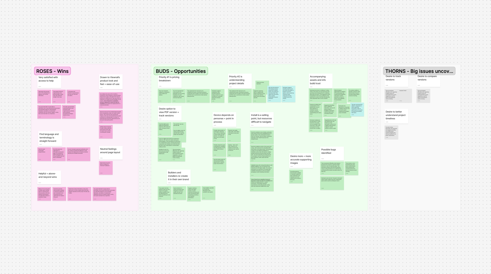
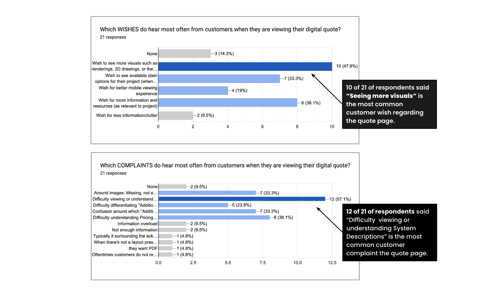
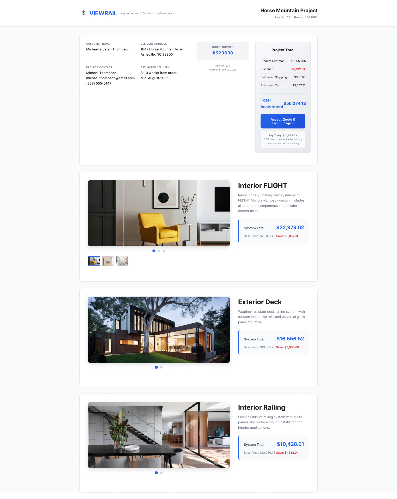
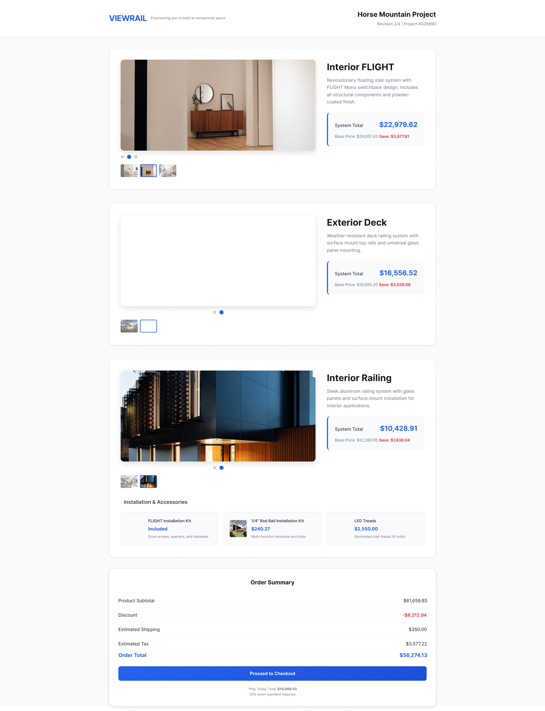
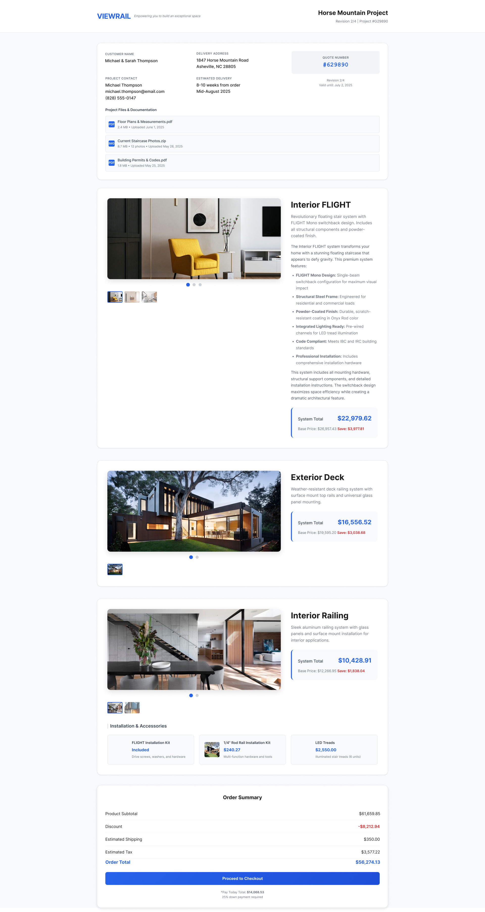

Role
UX Designer
Viewrail • Digital Quote Experience • Handed Off
UX Designer
UX Strategy
UX Design
Prototyping
Three sprints
June - July
2025
Product Manager
Frontend Developer
Backend Developer
Viewrail designs and manufactures custom stair and railing systems for luxury residential and builder markets. Quotes are not casual price checks. They represent high-ticket, highly customized purchases that require confidence and clarity before commitment.
The digital quote experience is a critical touchpoint in that journey.
Launched on a rush timeline over two years prior, the digital quote hadn't been meaningfully updated since. Over time, complexity grew and Sales developed workarounds.
The initial request was simple: enable internal image uploads. The business goal: give customers more context and reduce back-and-forth with Sales.

After an audit of the current digital quote experience, we agreed to focus on the external touch point first. The business goal: reduce Sales support volume. The design question: why do customers need excess Sales support at this key decision point?


"I want to understand the cost right away. I can't tell how each of my selections affects the price...it's unclear what's included or now, and where I need to maybe re-think selections with my contractor." Homeowner interview
Customers couldn't distinguish between systems, add-ons, and installation. Pricing hierarchy was flat and ambiguous.

Terminology shifted between "quote" and "order" across pages, eroding confidence at the moment of commitment.
System descriptions, configuration details, and measurements were collapsed or buried. Customers had to click to find critical info.

No way to download, share, or save the quote. Customers relied entirely on Sales to resurface information.
Key findings from Sales team survey and customer interviews.
As a shared-resource UX designer and the sole designer on this project, I owned discovery, reframing the problem, defining requirements, prototyping, testing, and developer handoff. I worked closely with the project team, Sales, and Marketing to ensure alignment across customer experience and internal workflows.

I mapped research findings to user stories and prioritized opportunities using a SWOT analysis, then leveraged AI to explore multiple design directions within a single sprint.




After numerous iterations, pricing is now organized with a clear visual hierarchy. We also replaced red with green to signal positive savings, aligning the color cues with the tone of a high-touch experience.
Selections are itemized line by line within the descriptions, making pricing more transparent across the experience. This reduces human error from manually created paragraph descriptions and lowers the risk of users missing important details hidden in accordion sections. Customers can see exactly what they're paying for at a glance.
A dedicated section at the bottom of the quote consolidates all supporting project documentation in one place. Instead of hunting through email threads from their sales rep, customers can download and share these materials independently.
Post-launch feedback showed reduced Sales back-and-forth, more confident internal use of the tool, and a scalable structure for managing quote documentation. The redesigned experience better reflects Viewrail's premium brand and shipped on schedule within three sprints.
"This looks so much more professional, I can't wait to share out new quotes with this." Viewrail Sales Rep
By redesigning the digital quote experience we reduced confusion, restored trust, and created a scalable foundation for future improvements to the digital quote experience.